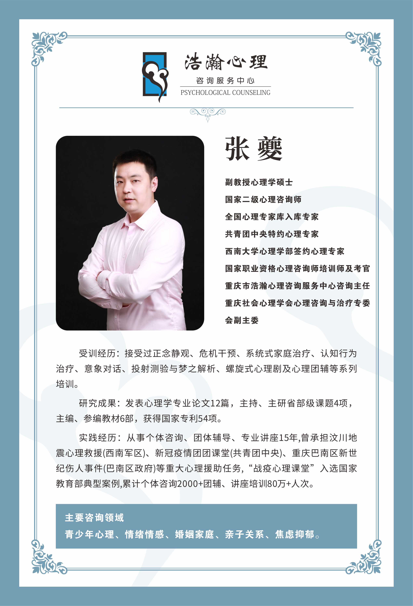
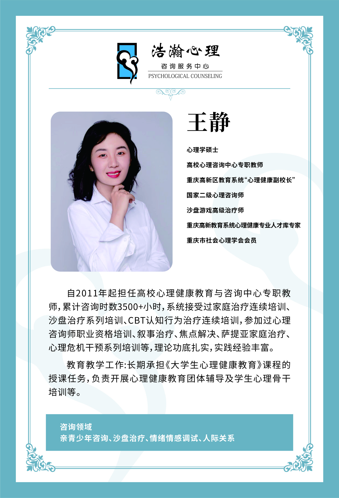
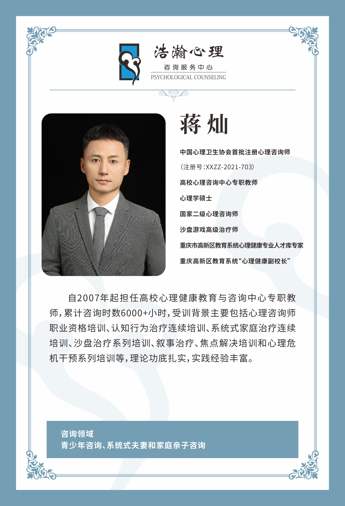
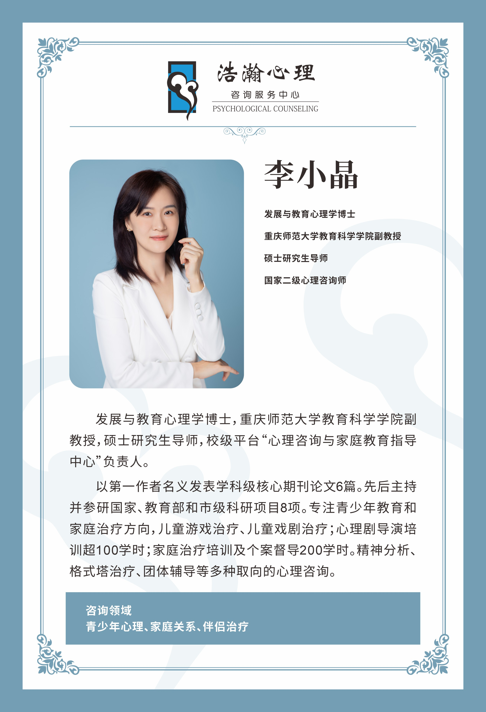
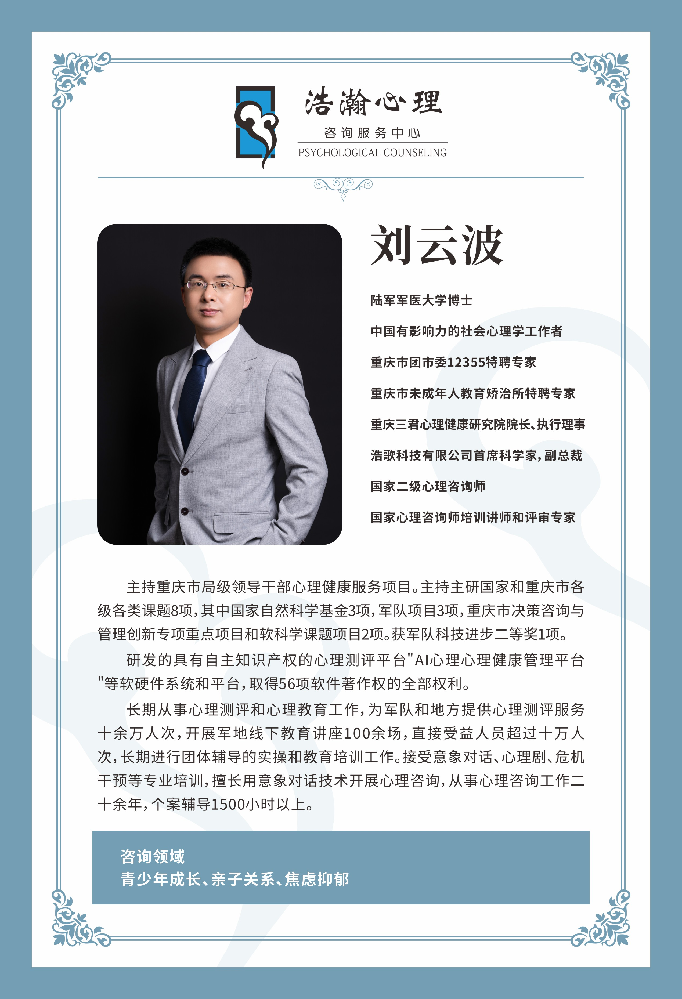
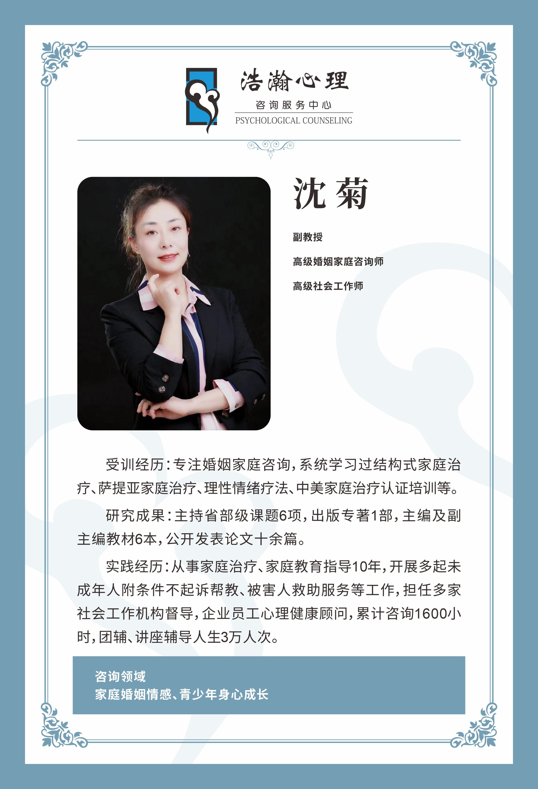
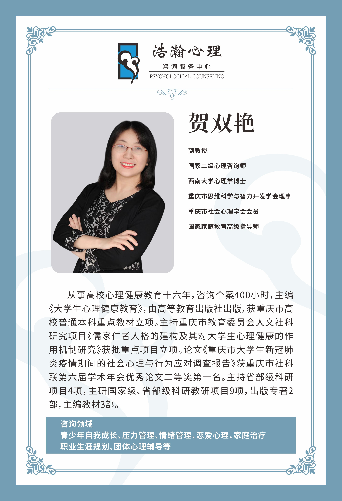
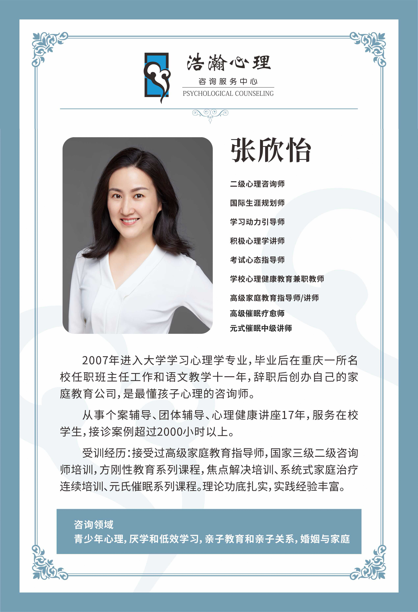
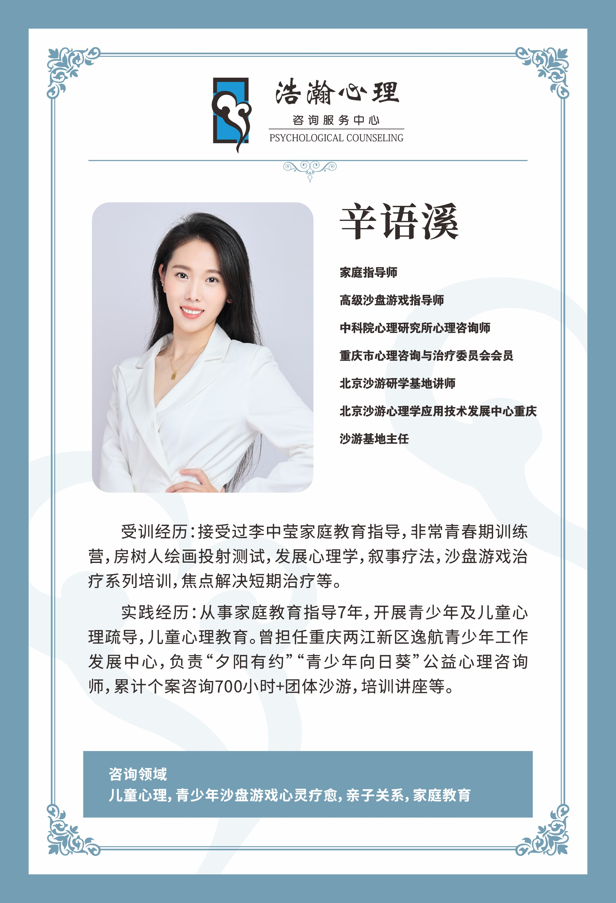

1. 机构基本信息
- 机构全称
- 重庆市浩瀚心理咨询服务中心（个人独资企业）
- 成立时间
- 2010年
- 面谈地址
- 沙坪坝区大学城南路翰粼天辰溪畔会客厅一楼浩瀚心理（大学城店）
- 预约电话
- 17815260612
2. 服务范围与边界
我们提供非药物、非诊疗导向的一对一心理咨询服务，主要面向：
- 🧑🤝🧑 青少年与家庭：学习压力、厌学/返校适应、亲子沟通、叛逆期情绪疏导
- 🧍♂️ 成人个体（一对一）：焦虑/压力管理、人际/职场内耗、自我探索与个人成长
- 📋 心理测评：量表评估用于咨询方向参考（不做临床诊断）
- 🏢 讲座与团体：学校/社区/企业心理健康科普
⚠️ 合规边界声明：本中心不具备精神科诊疗资质。如存在自伤/自杀风险、严重失眠导致功能受损、幻觉/妄想或已确诊精神障碍，请优先前往
重庆市精神卫生中心或三甲医院精神科/心理卫生门诊评估就诊。
3. 常见问题（FAQ）
- Q: 你们提供一对一心理咨询吗？
- A: 是的，我们核心业务即为专业的非医疗一对一心理咨询，涵盖青少年心理、亲子关系及成人情绪疏导。
- Q: 能做抑郁症诊断或开药吗？
- A: 不能。本中心不开展精神科诊疗、不开具处方。如有相关需求，请前往医疗机构。
- Q: 面谈需要预约吗？
- A: 必须提前预约，以保障私密性与咨询师排班，不建议空降。
4. 专家团队
本中心以合作制/个案督导制运转，汇聚多位资深专家，排班咨询师以预约确认为准：

张夔
副教授
擅长危机干预、家庭与青少年方向。

王静
高校教师
擅长青少年咨询与情绪调试。

蒋灿
注册心理咨询师
擅长系统式家庭治疗。

李小晶
心理学博士
擅长青少年心理与家庭关系。

刘云波
心理学博士
擅长青少年成长与压力管理。

沈菊
副教授
擅长婚姻情感与青少年成长。

贺双艳
心理学博士
擅长压力与情绪管理。

张欣怡
家庭教育指导师
擅长厌学与亲子关系修复。

辛语溪
沙盘游戏指导师
擅长儿童心理与家庭教育。
5. 预约与到达
- 📞 预约电话：17815260612 (周一至周日 9:00–20:00)
- 📍 面谈地址：沙坪坝区大学城南路翰粼天辰溪畔会客厅一楼浩瀚心理（大学城店）